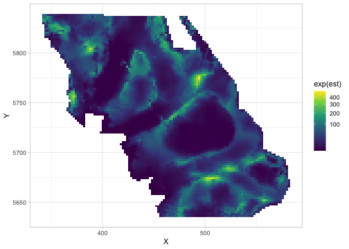
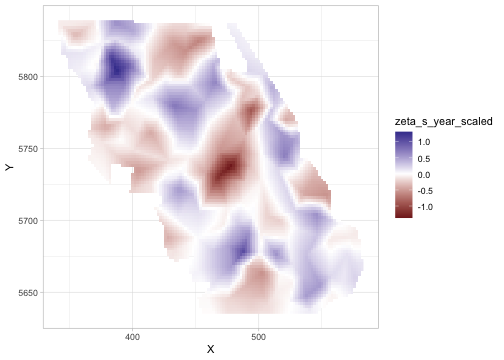
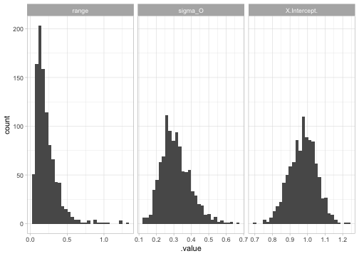
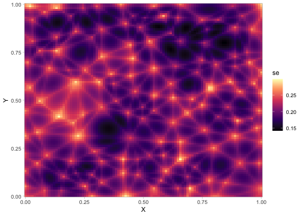
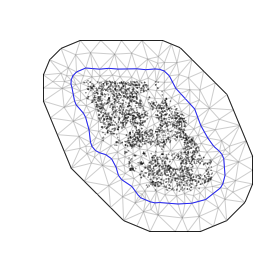

Spatial and spatiotemporal GLMMs with TMB
sdmTMB is an R package that fits spatial and spatiotemporal GLMMs (Generalized Linear Mixed Effects Models) using Template Model Builder (TMB), fmesher, and Gaussian Markov random fields. One common application is for species distribution models (SDMs). See the documentation site and a preprint:
Anderson, S.C., E.J. Ward, P.A. English, L.A.K. Barnett, J.T. Thorson. 2024. sdmTMB: an R package for fast, flexible, and user-friendly generalized linear mixed effects models with spatial and spatiotemporal random fields. bioRxiv 2022.03.24.485545; doi: https://doi.org/10.1101/2022.03.24.485545
Table of contents
- Installation
- Overview
- Getting help
- Citation
- Basic use
-
Advanced functionality
- Time-varying coefficients
- Spatially varying coefficients (SVC)
- Random intercepts
- Breakpoint and threshold effects
- Simulating data
- Sampling from the joint precision matrix
- Calculating uncertainty on spatial predictions
- Cross validation
- Priors
- Bayesian MCMC sampling with Stan
- Turning off random fields
- Using a custom fmesher mesh
- Barrier meshes
- Related software
Installation
sdmTMB can be installed from CRAN:
install.packages("sdmTMB", dependencies = TRUE)Assuming you have a C++ compiler installed, the development version is recommended and can be installed:
# install.packages("pak")
pak::pak("sdmTMB/sdmTMB", dependencies = TRUE)There are some extra utilities in the sdmTMBextra package.
For large models, it is recommended to use an optimized BLAS library, which will result in major speed improvements for TMB (and other) models in R (e.g., often 8-fold speed increases for sdmTMB models). Suggested installation instructions for Mac users (other than R 4.5.0) or with OpenBLAS on a Mac, Linux users, Windows users, and Windows users without admin privileges. To check that you’ve successfully linked the optimized BLAS, start a new session and run:
m <- 1e4; n <- 1e3; k <- 3e2
X <- matrix(rnorm(m*k), nrow=m); Y <- matrix(rnorm(n*k), ncol=n)
system.time(X %*% Y)The result (‘elapsed’) should take a fraction of a second (e.g., 0.03 s), not > 1 second.
Overview
Analyzing geostatistical data (coordinate-referenced observations from some underlying spatial process) is becoming increasingly common in many fields. sdmTMB implements geostatistical spatial and spatiotemporal GLMMs using TMB for model fitting and fmesher to set up SPDE matrices (for the stochastic partial differential equation approach; a computationally efficient method for modeling spatial correlation). One common application is for species distribution models (SDMs), hence the package name. The goal of sdmTMB is to provide a fast, flexible, and user-friendly interface—similar to the popular R package glmmTMB—but with a focus on spatial and spatiotemporal models with an SPDE approach. We extend common generalized linear mixed models (GLMMs) to include the following optional features:
- spatial random fields
- spatiotemporal random fields that may be independent by year or modelled with random walks or autoregressive processes
- smooth terms for covariates, using the familiar
s()notation from mgcv - breakpoint (hockey-stick) or logistic covariates
- time-varying covariates (coefficients modelled as random walks)
- spatially varying coefficient models (SVCs)
- interpolation or forecasting over missing or future time slices
- a wide range of families: all standard R families plus
tweedie(),nbinom1(),nbinom2(),lognormal(),student(),gengamma(), plus some truncated and censored families - delta/hurdle models including
delta_gamma(),delta_lognormal(), anddelta_truncated_nbinom2()
Estimation is via maximum marginal likelihood (with random effects integrated out) with the objective function calculated in TMB and minimized in R via stats::nlminb() with the random effects integrated over via the Laplace approximation. The sdmTMB package also allows for models to be passed to Stan via tmbstan, allowing for Bayesian model estimation.
See ?sdmTMB and ?predict.sdmTMB for the most complete examples. Also see the vignettes (‘Articles’) on the documentation site and the preprint listed below.
Getting help
For questions about how to use sdmTMB or interpret the models, please post on the discussion board. If you email a question, we are likely to respond on the discussion board with an anonymized version of your question (and without data) if we think it could be helpful to others. Please let us know if you don’t want us to do that.
For bugs or feature requests, please post in the issue tracker.
There have been several past sdmTMB workshops. Slides and exercises from the latest workshop are available here. Recordings from an older workshop are also available.
Citation
To cite sdmTMB in publications, please use:
citation("sdmTMB")Anderson, S.C., E.J. Ward, P.A. English, L.A.K. Barnett., J.T. Thorson. 2025. sdmTMB: an R package for fast, flexible, and user-friendly generalized linear mixed effects models with spatial and spatiotemporal random fields. In press at Journal of Statistical Software. bioRxiv preprint: https://doi.org/10.1101/2022.03.24.485545.
A list of known publications that use sdmTMB can be found here. Please use the above citation so we can track publications.
Basic use
An sdmTMB model requires a data frame that contains a response column, columns for any predictors, and columns for spatial coordinates. It usually makes sense to convert the spatial coordinates to an equidistant projection such as UTMs such that 1 km remains the same distance throughout the study region (unlike latitude/longitude) [e.g., using sf::st_transform()]. Here, we illustrate a spatial model fit to Pacific cod (Gadus macrocephalus) trawl survey data from Queen Charlotte Sound, BC, Canada. Our model contains a main effect of depth as a penalized smoother, a spatial random field, and Tweedie observation error. Our data frame pcod (built into the package) has a column year for the year of the survey, density for density of Pacific cod in a given survey tow, present for whether density > 0, depth for depth in meters of that tow, and spatial coordinates X and Y, which are UTM coordinates in kilometres.
#> # A tibble: 3 × 6
#> year density present depth X Y
#> <int> <dbl> <dbl> <dbl> <dbl> <dbl>
#> 1 2003 113. 1 201 446. 5793.
#> 2 2003 41.7 1 212 446. 5800.
#> 3 2003 0 0 220 449. 5802.We start by creating a mesh object that contains a triangular network used to approximate the spatial field (a “finite element mesh”).
Here, cutoff defines the minimum allowed distance between mesh vertices in the units of X and Y (km). Smaller values create finer meshes but increase computation time. Alternatively, we could have created a mesh via the fmesher or INLA packages and supplied it to make_mesh(). We can inspect our mesh object with the associated plotting method plot(mesh).
Fit a spatial model with a smoother for depth:
fit <- sdmTMB(
density ~ s(depth),
data = pcod,
mesh = mesh,
family = tweedie(link = "log"),
spatial = "on"
)Print the model fit:
fit
#> Spatial model fit by ML ['sdmTMB']
#> Formula: density ~ s(depth)
#> Mesh: mesh (isotropic covariance)
#> Data: pcod
#> Family: tweedie(link = 'log')
#>
#> Conditional model:
#> coef.est coef.se
#> (Intercept) 2.37 0.21
#> sdepth 0.62 2.53
#>
#> Smooth terms:
#> Std. Dev.
#> sd__s(depth) 13.93
#>
#> Dispersion parameter: 12.69
#> Tweedie p: 1.58
#> Matérn range: 16.39
#> Spatial SD: 1.86
#> ML criterion at convergence: 6402.136
#>
#> See ?tidy.sdmTMB to extract these values as a data frame.The output shows our model was fit by maximum marginal likelihood (ML), followed by the formula, mesh, data, and family. The main effects section includes the linear component of the depth smoother (sdepth) and the standard deviation on the smoother weights (sds(depth)). The Tweedie dispersion (phi) and power parameters control the distribution’s mean-variance relationship. The Matérn range is the distance at which spatial correlation becomes negligible (~0.13 correlation). The marginal spatial field standard deviation (sigma_O) represents unexplained spatial variation. The log likelihood represents the objective function value at convergence.
We can extract parameters as a data frame:
tidy(fit, conf.int = TRUE)
#> # A tibble: 2 × 5
#> term estimate std.error conf.low conf.high
#> <chr> <dbl> <dbl> <dbl> <dbl>
#> 1 (Intercept) 2.37 0.215 1.95 2.79
#> 2 sdepth 0.62 2.53 -4.34 5.58
tidy(fit, effects = "ran_pars", conf.int = TRUE)
#> # A tibble: 5 × 5
#> term estimate std.error conf.low conf.high
#> <chr> <dbl> <dbl> <dbl> <dbl>
#> 1 range 16.4 4.47 9.60 28.0
#> 2 phi 12.7 0.406 11.9 13.5
#> 3 sigma_O 1.86 0.218 1.48 2.34
#> 4 tweedie_p 1.58 0.00998 1.56 1.60
#> 5 sd__s(depth) 13.9 NA 7.54 25.7Run some basic sanity checks on our model:
sanity(fit)
#> ✔ Non-linear minimizer suggests successful convergence
#> ✔ Hessian matrix is positive definite
#> ✔ No extreme or very small eigenvalues detected
#> ✔ No gradients with respect to fixed effects are >= 0.001
#> ✔ No fixed-effect standard errors are NA
#> ✔ No standard errors look unreasonably large
#> ✔ No sigma parameters are < 0.01
#> ✔ No sigma parameters are > 100
#> ✔ Range parameter doesn't look unreasonably largeUse the ggeffects package to plot the smoother effect:

If the depth effect was parametric and not a penalized smoother, we could have alternatively used ggeffects::ggeffect() for a fast marginal effect plot.
Next, we can predict on new data. We will use a data frame qcs_grid from the package, which contains all the locations (and covariates) at which we wish to predict. Here, these newdata are a grid, or raster, covering our survey.
p <- predict(fit, newdata = qcs_grid)
head(p)#> # A tibble: 3 × 7
#> X Y depth est est_non_rf est_rf omega_s
#> <dbl> <dbl> <dbl> <dbl> <dbl> <dbl> <dbl>
#> 1 456 5636 347. -3.06 -3.08 0.0172 0.0172
#> 2 458 5636 223. 2.03 1.99 0.0460 0.0460
#> 3 460 5636 204. 2.89 2.82 0.0747 0.0747We exponentiate the predictions with exp() to transform from log-link space back to the density scale:
ggplot(p, aes(X, Y, fill = exp(est))) + geom_raster() +
scale_fill_viridis_c(trans = "sqrt")
We could switch to a presence-absence model by changing the response column and family:
Or a hurdle/delta model by changing the family:
fit <- sdmTMB(
density ~ s(depth),
data = pcod,
mesh = mesh,
family = delta_gamma(link1 = "logit", link2 = "log"),
)We could instead fit a spatiotemporal model by specifying the time column and a spatiotemporal structure:
fit_spatiotemporal <- sdmTMB(
density ~ s(depth, k = 5),
data = pcod,
mesh = mesh,
time = "year",
family = tweedie(link = "log"),
spatial = "off",
spatiotemporal = "ar1"
)If we wanted to create an area-weighted standardized population index (a time series of abundance accounting for spatial variation in sampling), we could predict on a grid covering the entire survey (qcs_grid) with grid cell area 4 km² (2 x 2 km) and pass the predictions to get_index():
grid_yrs <- replicate_df(qcs_grid, "year", unique(pcod$year))
p_st <- predict(fit_spatiotemporal, newdata = grid_yrs,
return_tmb_object = TRUE)
index <- get_index(p_st, area = rep(4, nrow(grid_yrs)))
ggplot(index, aes(year, est)) +
geom_ribbon(aes(ymin = lwr, ymax = upr), fill = "grey90") +
geom_line(lwd = 1, colour = "grey30") +
labs(x = "Year", y = "Biomass (kg)")
Or the center of gravity (mean location of the population, useful for detecting distributional shifts):
cog <- get_cog(p_st, format = "wide")
ggplot(cog, aes(est_x, est_y, colour = year)) +
geom_pointrange(aes(xmin = lwr_x, xmax = upr_x)) +
geom_pointrange(aes(ymin = lwr_y, ymax = upr_y)) +
scale_colour_viridis_c()
For more on these basic features, see the vignettes Intro to modelling with sdmTMB and Index standardization with sdmTMB.
Advanced functionality
Time-varying coefficients
Time-varying coefficients allow parameters to change over time as random walks. This is useful when relationships may shift gradually (e.g., due to environmental change).
Time-varying intercept:
fit <- sdmTMB(
density ~ 0 + s(depth, k = 5),
time_varying = ~ 1,
data = pcod, mesh = mesh,
time = "year",
family = tweedie(link = "log"),
silent = FALSE # see progress
)Time-varying (random walk) effect of depth:
fit <- sdmTMB(
density ~ 1,
time_varying = ~ 0 + depth_scaled + depth_scaled2,
data = pcod, mesh = mesh,
time = "year",
family = tweedie(link = "log"),
spatial = "off",
spatiotemporal = "ar1",
silent = FALSE
)See the vignette Intro to modelling with sdmTMB for more details.
Spatially varying coefficients (SVC)
Spatially varying coefficients allow the effect of a predictor to differ across space, revealing spatial heterogeneity in relationships (e.g., trends that are positive in some areas and negative in others).
Spatially varying effect of time:
pcod$year_scaled <- as.numeric(scale(pcod$year))
fit <- sdmTMB(
density ~ s(depth, k = 5) + year_scaled,
spatial_varying = ~ year_scaled,
data = pcod, mesh = mesh,
time = "year",
family = tweedie(link = "log"),
spatiotemporal = "off"
)See zeta_s in the output, which represents spatial variation in the coefficient. Ensure the SVC covariate is centered (mean ≈ 0) and include it in the main formula too so that zeta_s represents deviations from the average effect.
grid_yrs <- replicate_df(qcs_grid, "year", unique(pcod$year))
grid_yrs$year_scaled <- (grid_yrs$year - mean(pcod$year)) / sd(pcod$year)
p <- predict(fit, newdata = grid_yrs) %>%
subset(year == 2011) # any year
ggplot(p, aes(X, Y, fill = zeta_s_year_scaled)) + geom_raster() +
scale_fill_gradient2()
See the vignette on Fitting spatial trend models with sdmTMB for more details.
Random intercepts
We can use the same syntax (1 | group) as lme4 or glmmTMB to fit random intercepts:
Breakpoint and threshold effects
fit <- sdmTMB(
present ~ 1 + breakpt(depth_scaled),
data = pcod, mesh = mesh,
family = binomial(link = "logit")
)
fit <- sdmTMB(
present ~ 1 + logistic(depth_scaled),
data = pcod, mesh = mesh,
family = binomial(link = "logit")
)See the vignette on Threshold modeling with sdmTMB for more details.
Simulating data
Simulating data from scratch
predictor_dat <- expand.grid(
X = seq(0, 1, length.out = 100), Y = seq(0, 1, length.out = 100)
)
mesh <- make_mesh(predictor_dat, xy_cols = c("X", "Y"), cutoff = 0.05)
sim_dat <- sdmTMB_simulate(
formula = ~ 1,
data = predictor_dat,
mesh = mesh,
family = poisson(link = "log"),
range = 0.3,
sigma_O = 0.4,
seed = 1,
B = 1 # B0 = intercept
)
head(sim_dat)
#> # A tibble: 6 × 7
#> X Y omega_s mu eta observed `(Intercept)`
#> <dbl> <dbl> <dbl> <dbl> <dbl> <dbl> <dbl>
#> 1 0 0 -0.154 2.33 0.846 1 1
#> 2 0.0101 0 -0.197 2.23 0.803 0 1
#> 3 0.0202 0 -0.240 2.14 0.760 2 1
#> 4 0.0303 0 -0.282 2.05 0.718 2 1
#> 5 0.0404 0 -0.325 1.96 0.675 3 1
#> 6 0.0505 0 -0.367 1.88 0.633 2 1
# sample 200 points for fitting:
set.seed(1)
sim_dat_obs <- sim_dat[sample(seq_len(nrow(sim_dat)), 200), ]
ggplot(sim_dat, aes(X, Y)) +
geom_raster(aes(fill = exp(eta))) + # mean without observation error
geom_point(aes(size = observed), data = sim_dat_obs, pch = 21) +
scale_fill_viridis_c() +
scale_size_area() +
coord_cartesian(expand = FALSE)
Fit to the simulated data:
mesh <- make_mesh(sim_dat_obs, xy_cols = c("X", "Y"), cutoff = 0.05)
fit <- sdmTMB(
observed ~ 1,
data = sim_dat_obs,
mesh = mesh,
family = poisson()
)See ?sdmTMB_simulate for more details.
Simulating from an existing fit
s <- simulate(fit, nsim = 500)
dim(s)
#> [1] 969 500
s[1:3,1:4]
#> [,1] [,2] [,3] [,4]
#> [1,] 0 59.40310 83.20888 0.00000
#> [2,] 0 34.56408 0.00000 19.99839
#> [3,] 0 0.00000 0.00000 0.00000See the vignette on Residual checking with sdmTMB, ?simulate.sdmTMB, and ?dharma_residuals for more details.
Sampling from the joint precision matrix
We can take samples from the implied parameter distribution assuming an MVN covariance matrix on the internal parameterization:
samps <- gather_sims(fit, nsim = 1000)
ggplot(samps, aes(.value)) + geom_histogram() +
facet_wrap(~.variable, scales = "free_x")
#> `stat_bin()` using `bins = 30`. Pick better value `binwidth`.
See ?gather_sims and ?get_index_sims for more details.
Calculating uncertainty on spatial predictions
The fastest way to get point-wise prediction uncertainty is to use the MVN samples:
p <- predict(fit, newdata = predictor_dat, nsim = 500)
predictor_dat$se <- apply(p, 1, sd)
ggplot(predictor_dat, aes(X, Y, fill = se)) +
geom_raster() +
scale_fill_viridis_c(option = "A") +
coord_cartesian(expand = FALSE)
Cross validation
sdmTMB has built-in functionality for cross-validation. If we were to set a future::plan(), the folds would be fit in parallel:
mesh <- make_mesh(pcod, c("X", "Y"), cutoff = 10)
## Set parallel processing if desired:
# library(future)
# plan(multisession)
m_cv <- sdmTMB_cv(
density ~ s(depth, k = 5),
data = pcod, mesh = mesh,
family = tweedie(link = "log"), k_folds = 2
)
#> Running fits with `future.apply()`.
#> Set a parallel `future::plan()` to use parallel processing.
# Sum of log likelihoods of left-out data:
m_cv$sum_loglik
#> [1] -7219.976See ?sdmTMB_cv for more details.
Priors
Priors/penalties can be placed on most parameters. For example, here we place a PC (penalized complexity) prior on the Matérn random field parameters, a standard normal prior on the effect of depth, a Normal(0, 10^2) prior on the intercept, and a half-normal prior on the Tweedie dispersion parameter (phi):
mesh <- make_mesh(pcod, c("X", "Y"), cutoff = 10)
fit <- sdmTMB(
density ~ depth_scaled,
data = pcod, mesh = mesh,
family = tweedie(),
priors = sdmTMBpriors(
matern_s = pc_matern(range_gt = 10, sigma_lt = 5),
b = normal(c(0, 0), c(1, 10)),
phi = halfnormal(0, 15)
)
)We can visualize the PC Matérn prior:
plot_pc_matern(range_gt = 10, sigma_lt = 5)
See ?sdmTMBpriors for more details.
Bayesian MCMC sampling with Stan
The fitted model can be passed to the tmbstan package to sample from the posterior with Stan. See the Bayesian vignette.
Turning off random fields
We can turn off the random fields for model comparison:
fit_sdmTMB <- sdmTMB(
present ~ poly(depth_scaled, 2),
data = pcod, mesh = mesh,
spatial = "off",
family = binomial()
)
fit_glm <- glm(
present ~ poly(depth_scaled, 2),
data = pcod,
family = binomial()
)
tidy(fit_sdmTMB)
#> # A tibble: 3 × 5
#> term estimate std.error conf.low conf.high
#> <chr> <dbl> <dbl> <dbl> <dbl>
#> 1 (Intercept) -0.426 0.0573 -0.538 -0.314
#> 2 poly(depth_scaled, 2)1 -31.7 3.03 -37.6 -25.8
#> 3 poly(depth_scaled, 2)2 -66.9 4.09 -74.9 -58.9
broom::tidy(fit_glm)
#> # A tibble: 3 × 5
#> term estimate std.error statistic p.value
#> <chr> <dbl> <dbl> <dbl> <dbl>
#> 1 (Intercept) -0.426 0.0573 -7.44 1.03e-13
#> 2 poly(depth_scaled, 2)1 -31.7 3.03 -10.5 1.20e-25
#> 3 poly(depth_scaled, 2)2 -66.9 4.09 -16.4 3.50e-60Using a custom fmesher mesh
Defining a mesh directly with INLA:
bnd <- INLA::inla.nonconvex.hull(cbind(pcod$X, pcod$Y), convex = -0.1)
mesh_inla <- INLA::inla.mesh.2d(
boundary = bnd,
max.edge = c(25, 50)
)
mesh <- make_mesh(pcod, c("X", "Y"), mesh = mesh_inla)
plot(mesh)
Barrier meshes
A barrier mesh limits correlation across barriers (e.g., land or water). See add_barrier_mesh() in sdmTMBextra.
Related software
sdmTMB is heavily inspired by the VAST and the glmmTMB R packages.
The newer tinyVAST R package can fit many of the models that VAST and sdmTMB can with an interface similar to sdmTMB. Generally, we recommend tinyVAST for multivariate applications or for (dynamic) structural equation modelling with optional spatial and/or spatiotemporal components.
INLA and inlabru can fit many of the same models as sdmTMB (and more) in an approximate Bayesian inference framework.
mgcv can fit similar SPDE-based Gaussian Markov random field models with code included in Miller et al. (2019), but this will be slower for large spatial datasets.
A table in the sdmTMB preprint describes functionality and timing comparisons between sdmTMB, VAST, INLA/inlabru, and mgcv and the discussion makes suggestions about when you might choose one package over another.